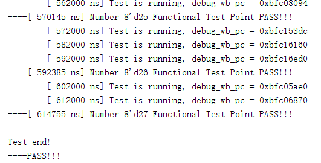
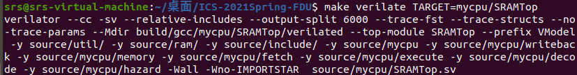

五级流水线 MIPS CPU 实验报告
计算机科学与技术
19307130296
孙若诗
1、实现指令
1.1 R型指令
R-type = op(6) + rs(5) + rt(5) + rd(5) + shamt(5) + funct(6)
- addu : GPR[rd] = GPR[rs] + GPR[rt]
- subu : GPR[rd] = GPR[rs] - GPR[rt]
- and : GPR[rd] = GPR[rs] & GPR[rt]
- or : GPR[rd] = GPR[rs] | GPR[rt]
- nor : GPR[rd] = ~(GPR[rs] | GPR[rt])
- xor : GPR[rd] = GPR[rs] ^ GPR[rt]
- sll : GPR[rd] = GPR[rt] << shamt
- sra : GPR[rd] = GPR[rt] >>> shamt (arithmetic)
- srl : GPR[rd] = GPR[rt] >> shamt (logical)
- slt : GPR[rd] = (GPR[rs] < GPR[rt]) (signed)
- sltu : GPR[rd] = (GPR[rs] < GPR[rt]) (unsigned)
- jr : pc = GPR[rs]
1.2 I型指令
I-type = op(6) + rs(5) + rt(5) + imm(16)
- addiu : GPR[rt] = GPR[rs] + sign_extend(imm)
- andi : GPR[rt] = GPR[rs] & zero_extend(imm)
- ori : GPR[rt] = GPR[rs] | zero_extend(imm)
- xori : GPR[rt] = GPR[rs] ^ zero_extend(imm)
- slti : GPR[rt] = (GPR[rs] < imm) (signed)
- sltiu : GPR[rt] = (GPR[rs] < imm) (unsigned)
- lui : GPR[rt] = imm << 16
- beq : if(GPR[rs] == GPR[rt]) pc += 4 + imm << 2
- bne : if(GPR[rs] != GPR[rt])
pc += imm << 2
- lw : GPR[rt] = mem[GPR[rs] + sign_extend(offset)]
- sw : mem[GPR[rs] + sign_extend(offset)] = GPR[rt]
1.3 J型指令
J-type = op(6) + instr_index(26)
- j : pc = (pc + 4)[31:28] + (instr_index << 2)
- jal : GPR[31] = pc + 8, pc = (pc + 4)[31:28] + (instr_index << 2)
2、阶段分析
参考《数字设计和计算机体系结构》中五级流水线设计

2.1 Fetch
这一阶段选择下一条执行的指令地址，并与指令内存交互。SelectPC阶段整合在fetch内，但SelectPC计算出的PC要在时钟上升沿才进入fetch。
2.2 Decode
这一阶段的主要任务是：指令解码，生成控制信号、从 Regfile（寄存器文件堆）中读取数据、判断是否跳转。
decode内部控制信号为14位，构成方式为sign_extend(1) + imm_type(2) + reg_dst(2) + reg_write(1) + alu_shamt(1) + alu_imm(1) + alu_funct(4) + memtoreg(1) + mem_write(1)。由于前五位信号仅在decode内部使用，输出控制信号为9位。
首先根据op和funct生成控制信号，从instr获取rsD、rtD、st_imm和shamtD，hazard转发生成修正值rsHD和rtHD。根据reg_dst确定写入寄存器的地址，sign_extend后根据imm_type确定立即数的运算值。
2.3 Execute
这一阶段的主要任务是完成计算，围绕ALU展开。
Execute模块的输入数据同样经过hazard转发。首先根据alu_shamt、alu_imm处理出ALU的两个参数，例化ALU进行运算。
rd和vt的值不发生改变，仅传向下一个阶段。
2.4 Memory
这一阶段与Data Memory进行数据交互。
2.5 Write Back
这一阶段向regfile写数据。
由于regfile已经例化，本模块仅需将reg_write传递给write_enable，将rdM传递给rdW，再根据memtoreg选择写入变量为ReadDataW还是ALUout即可。
2.6 Regfile
这一模块用于读写寄存器。有一个写端口，两个读端口，其中读地址来自D阶段，写地址来自W阶段。写部分是时序逻辑，读部分是组合逻辑，并选择更新过后的结果。
2.7 Hazard
这一阶段进行转发和阻塞。具体条件详见5.2、5.3部分。
3、实验现象



4. 修正BUG列表
- LW在M阶段同样需要阻塞，hazard输入增加loadM信号。
- ADDIU中imm同样为符号扩展，只是比较时作为无符号数。
- strobe为4位信号，需要将一位的mem_write信号重复四次。
- JR进入D阶段时，若相关寄存器处于E阶段将被写，同样需要stall（遵循E阶段不作为转发来源的原则）。
- resetn初始化与组合逻辑产生多驱动。若组合逻辑能自然赋值就不要重复操作，时序逻辑中只初始化那些CPU运行后也需要在时序逻辑中赋值的内容，也即EMW阶段的输入信号。
- SelectPC计算跳转pc使用的是D阶段的pc，因此开始也将D阶段pc赋初值，但是这样会导致第一条指令被重复执行。实际上第一周期必定不会跳转，只需要初始化instrF即可。
- 除了MyCore中控制的时序逻辑需要stall，fetch中更新pc和instr也需要被阻塞。
- logic _unused_ok = &{iresp……}; 用于在verilator中解决必要的unused warning。
- verilator中引用库需要加文件路径。
- 变量重复定义在vivado中只是Warning，使用verilator才会得到Error提醒。
- SW阶段是不修改寄存器的，reg_dst设为0，避免hazard错误地转发E阶段结果。
5、讨论
- 不同指令需要用到的流水线阶段可能不同：加法指令似乎不需要经过 Memory 阶段。能让它跳过 M 阶段吗？
- 可以但很没必要。在其他指令仍然为五级流水的情况下，增加E到W的数据通路只会让电路结构更加复杂。何况加法跳过了M阶段，后续指令仍在E阶段，并没有节省整体运行时间。如果一开始就对指令分类执行，可以有不同流水级数的实现，但是又要考虑在不同流水线之间传递数据的成本。
- 转发部分：哪些指令写通用寄存器？电路图中的哪些数据线可作为转发来源？转发条件是什么？优先级是什么？
- 除了SW、BEQ、BNE、J、JR，几乎其他所有指令都要写通用寄存器。
- 电路图中M阶段接受的ALUout和W阶段将写入寄存器的数据可作为转发来源。为什么不采用E阶段的结果？此时还不能确定数据已经准备好，毕竟E阶段的输入也需要转发。
- 转发条件是这个数据将被写入寄存器，且写入地址等于D或E阶段访问的地址。E阶段需要转发显然，D阶段则是为了及时确定分支是否跳转。
- Memory比WriteBack优先级更高，因为它包含了更新的执行指令的结果。
- 冲突阻塞部分：D 阶段取数据，E、M、W 阶段的写数据会造成冲突。哪些情况应当阻塞流水线？
- LW更新了寄存器，但是寄存器的值要到W阶段开始才获得（M读取+内存延迟），此时D阶段取数据会产生冲突。
- D阶段要产生是否跳转的信号，但E阶段还在对相关寄存器进行计算，也就是寄存器数据还没有准备好，需要阻塞。
- JR处于D阶段，此时若相关寄存器处于E阶段，需要阻塞一周期。
- 延迟槽是如何起作用的？
- 第一周期：fetch接受pc1；
- 第二周期：pc1进入decode，fetch接受pc2；此时pc1形成的pc进入selectpc。
- 第三周期：pc1进入execute，pc2进入decode，pc1形成的pc进入fetch。
- 因此如果pc1要求跳转，它后续一条指令pc2仍会照常执行，直到再下一条指令才做出反应。这就是“delay slot”的机制。
- 没有指令被错误地执行，代价是需要在decode阶段决策是否相等，要求寄存器变量的值被及时转发。
- 内存延迟解决方法
- 直接将instrF接入D和Regfile，将dataoutM接入W。需要注意的是，instrF应与D阶段pc保持一致，因此stall时F阶段不要读指令内存。
- 既然LW已经stall，W阶段转发的意义是什么（W阶段才确定的数据不是只有LW吗）？
- 流水线每个阶段的数据都是不同的，可能刚进入decode的指令和W阶段寄存器冲突，此时转发不是由于W阶段刚得到数据，而是因为decode刚得到指令。
-
$signed()是强制类型转换，signed'是类型声明，两种写法是等价的。
-
进一步体会到了硬件编程和高级语言的不同。因为一个变量只允许assign一次，所以之前的结果不能覆盖，只能再新建变量赋值，对应到硬件上就又增加了一层。如果结构预先未经过审慎设计，电路和代码都会过分复杂。
-
感觉自己学习本实验相关知识的顺序有些问题。第一周安装环境+读文档，第二周读了数逻和ICS上下的各册课本相关部分，虽然对流水线结构有浅显了解，但是自己实现还是毫无头绪。直到最后一周开始对照电路图和示例代码，从E阶段写起，到D阶段control设计就清晰许多，完成SelectPC后完全理解了流水线的各种工作细节，再去读课本才感到通透。脱离实践的理论意义毕竟有限，何况文字也本来是用来解释而非规定系统的，编程语言在这方面效果更佳。
-
感谢老师和各位助教学长的指导。争取下次不做ddl战士。